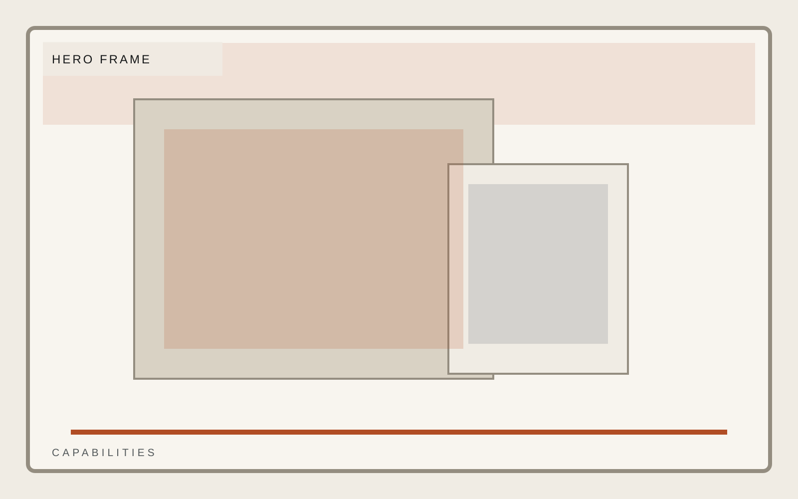
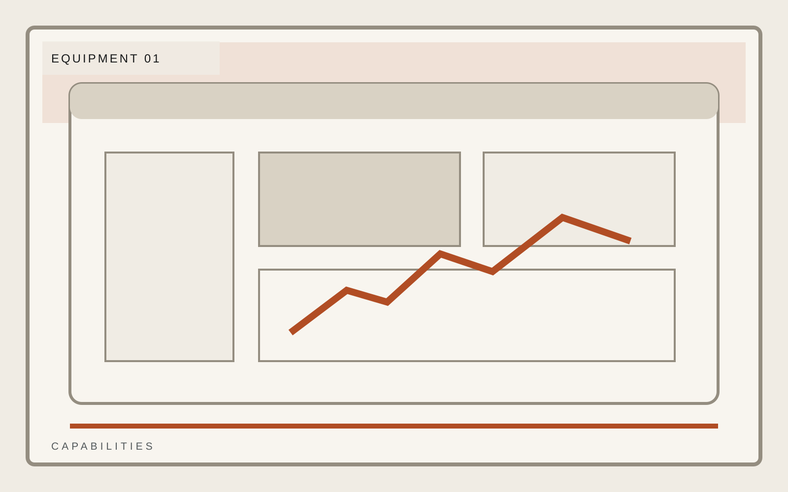
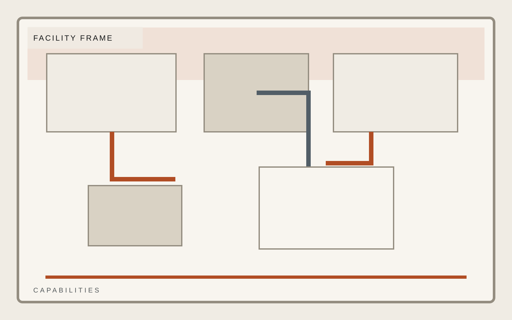

Industrial operations
Systems, equipment, and technical scope shown without embellishment.
Field response, equipment support, and facility-grade execution for operators who care more about standards than slogans. Technical pages fail when the diagrams are decorative. This one must stay readable.
Response
24 hour field escalation
Coverage
Rotating regional teams
Standard
Facility-first quality control

Industrial operations
Systems
Systems should be described in concrete terms with strong diagram frames and technical language that stays readable at a glance.
Response logic
Technical standards
Field accountability
Industrial operations
Equipment
Equipment framing should emphasize maintained readiness and practical utility, not generic heavy-industry aesthetics.
Response logic
Technical standards
Field accountability

Industrial operations
Certifications
Certifications must look like part of the operating system. Avoid treating them like badge wallpaper.
Response logic
Technical standards
Field accountability
Industrial operations
Facility
Facility and systems imagery must communicate technical readiness. The page should feel diagrammatic and operational rather than cinematic for its own sake.
Response logic
Technical standards
Field accountability
